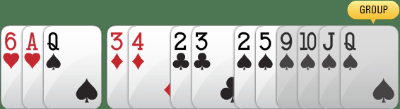

Online Rummy is a simple card game to play and it’s easy to learn too. Indian rummy can be played both on 2 player tables or 6 player tables. It is a Game of Skill the half battle won when you learn the basics of the game. If you're trying to find a reliable and safe platform to find out the way to play and learn rummy card games then you're at the right place.
These are the guidelines for you to follow after which you not only will learn how to play rummy games but also become an expert in this game.
Rummy is a simple card game that is played with two or more players. It requires 2 decks of cards if the number of players exceeds five. First player at a table arranges the cards which are dealt into predefined combinations and submits the melded cards. Your primary aim is to be the first players as the rest of the players accumulate points based on the cards in their hands. The player who has the least number of points at the end of a game wins the game.
Thirteen ranks of each of the four suits and additional 2 jokers are included in 52 cards deck.
four card suits are: clubs (♣), diamonds (♦), hearts (♥) and spades (♠)
cards in each suit are ace, 2, 3, 4, 5, 6, 7, 8, 9, and 10, jack, queen, and king. here face cards are jack, queen and king are and ace can be used either as 1 or as a face card when making the sequences.
joker: jokers act as a replacement or substitute for any card in melding sets or sequences.
points associated with cards: face cards – 10 points are associated with each face card and the rest of the cards have points according to the number printed. no points are associated with printed jokers or wild jokers.
Although the game on The Under 10 has adequate pointers on the table that tells you about each action you may take, but below is a quick guide on how to play rummy on a table online.
You have picked two cards up from options namely– the closed deck or the open deck.
Closed Deck : The remaining cards from the deck which has not been dealt with by the players are closed deck. The topmost card on the deck, is unknown to the players.
Open Deck : The pile of cards discarded per player per round is an open deck, these cards are visible to the players.
You can pick only one card at a time when it is your turn.
You can only pick the topmost card from Closed Deck or Open Deck, you can choose the pile.
There are two types of winning card combinations in a game of rummy when you finally meld your cards while placing a Show:
When you have 3 or more cards of the same suit in consecutive order.
For Example: Jack of Diamonds, Queen of Diamonds and King of Diamonds and can together form a sequence -J♦Q♦K♦ Similarly Three of Spades, Four of Spades, Five of Spades, and Six of Spades can together form a sequence - 3♥ 4♥ 5♥ 6♥
When you have 3 or more cards of the same rank but of different suits, you cannot use two cards of the same value in a single set.
For Example: Jack of Clubs, Jack of Spades and Jack of Hearts can together form a set - J♣J♠J♥
Similarly, Eight of Diamonds, Eight of Clubs, Eight of Spades and Eight of Hearts can together form a set - 8♦8♣8♠8♥
Jokers can be termed as wild cards as they play a very important role in the way your rummy game proceeds and in melding your cards as soon as possible.
There are 2 types of Jokers in Rummy namely– Printed Joker and Wild Joker.
Every deck of cards 52 cards has 2 extra cards which are known as Printed Jokers and they can be used to make sequences or sets once a pure sequence has been formed

Below is how a Printed Joker can be used to form sequences and sets:

Forming an sequence with Printed Joker

Forming an set with Printed Joker
In The Under 10 the cards are distributed randomly between all the opponents and appear in the fashion as shown below. You can easily arrange your cards by hitting the sort button. This feature sorts the cards according to their suits in increasing order of their ranks as shown. Using Sort makes it easier for the user to have a quicker understanding of what cards they have, strategize and decide how they want to proceed with the game.

Cards as they are served on the table

Cards after using the Sort feature
Sometimes when your opponent has a valid meld and you need to declare your cards.
Do you think that you’re being watched? You can hide your cards by simply clicking on the Flip button. When you enable this your cards will no longer be visible to anyone until it’s your turn to play next.
As soon as players have been dealt, you may be able to drop a game if you’re displeased with the cards you’ve received. However, this will give you a bunch of undesirable points, so it needs to be a calculated risk! (Don’t try this on your first date!)
The thing which separates it from offline rummy is that you cannot take your own sweet time for every move. This adds to the thrill of your skill!
Select the card that you want to discard by clicking on it and hit the discard icon that appears above the card. The discarded card will then move to the Open deck and your opponent may either pick this card or pick a card from Closed Deck in their next turn.

Place a Show
Group Cards
Select 2 or more cards that you want to group by clicking on them. After picking your combination, click on Group icon that appears on top of the cards.
